Prepared for ABM and AID by Kris Singh, Singh Studio, 20 October 2026
A review of abmission.org
I went through the site on a laptop and on a phone, checked every page in the sitemap for a working donation form, and built a concept from your own words and photographs. This is what I found and what I’d keep, with a plan that starts with the donate forms, because those can’t wait.
Today, on a phoneDonate is the last item in the menu, and zoom is switched off.
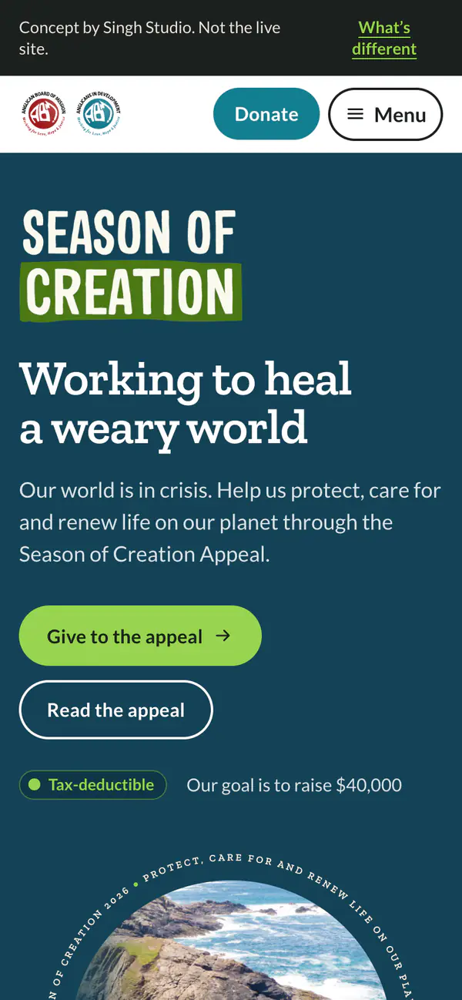
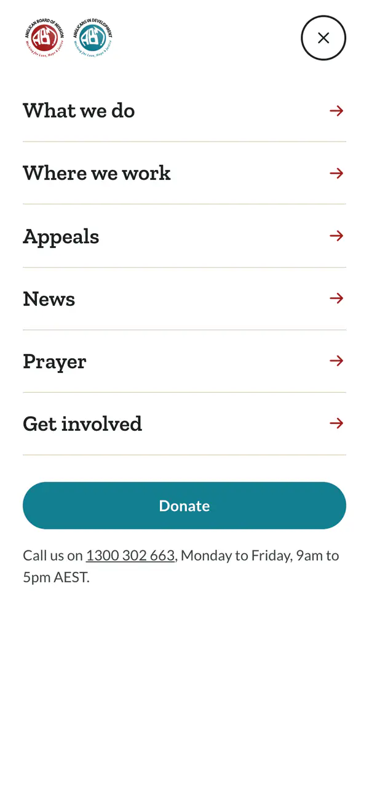
The conceptDonate is in the header on every screen, one tap from anywhere.
1
The short version
What’s working
The appeals are well made. Each one has a real story, a goal, a donation code, a prayer and a set of resources for parishes, and since Advent 2025 they’ve used Blackbaud’s newer donation form, which works well on a phone. The news is current, with nine stories since June, and the photographs are captioned and credited.
What needs attention first
On 20 October the donation form on 63 pages didn’t appear, including both general donate pages and nearly every program and partner page. On a phone Donate is hard to find and zoom is switched off, and in Google’s slow-connection test the homepage takes about 40 seconds to show its main image.
What I’d do
Move every Donate button onto Blackbaud’s newer form straight away, then give the current site a short tidy-up for phones, accessibility and a fresh homepage. After that I’d rebuild the templates on WordPress without the Divi page builder, keeping Blackbaud and your content, along the lines of the concept.
2
The donate forms
Blackbaud offers two ways to put a donation form on a website. The appeal pages you’ve made since Advent 2025 use the newer one, the adaptive form, and they work. Most of the rest of the site uses the older one, Online Express, which loads a script from Blackbaud’s servers. On 20 October that script was sending browsers to a Blackbaud error page, so the forms never appear. The pages still say “The donation form will appear below. Please allow time for it to open”, and then nothing happens.
The Internet Archive’s copies show the script still loading normally on 16 October, so this looks like a recent change at Blackbaud’s end and nothing your team did. It does mean that, for now, anyone who presses Donate in the main menu, or gives to a program or partner, finds an empty page.
Pages with a donation form, 20 October 2026
63 blank
11
Older form, blank on 20 October (63 pages)Adaptive form, working (11 pages)
The 63 pages with a blank form are:
both general donate pages, for the ABM General Fund and the AID General Fund;
Church to Church and Sustainable Communities;
11 of the 12 program pages, from Theological Education and the Encounter Program to the Reconciliation Fund and the Bishop Arthur Malcolm Endowment Fund;
11 of the 12 partner pages, from the Diocese of Jerusalem to the Zambia Anglican Council;
the 175th anniversary page, a 2024 donate page, five event pages and 30 older appeals.
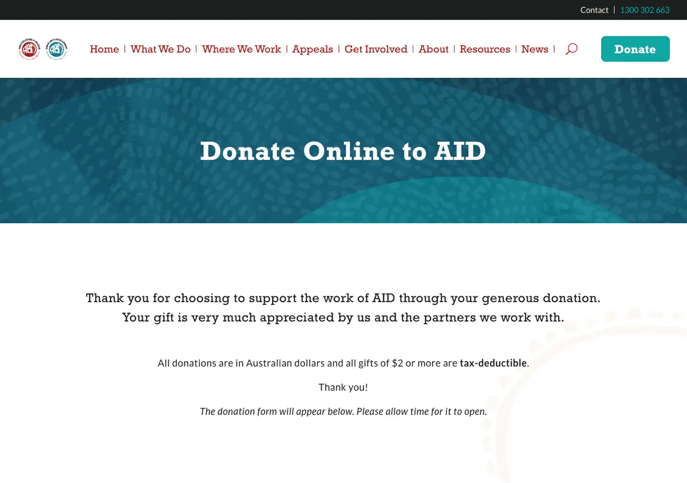
The AID donate page on 20 October. The form never arrives, even after 20 seconds.
Fix first
What I’d do this week
Point every Donate button at an adaptive form. Your Blackbaud account already has one for each appeal, so I’d expect most of the work to be setting up forms for the general funds, and for the programs and partners you want to keep taking gifts for, then swapping the old embed code on those pages. It may also be worth asking Blackbaud whether the older forms are being retired. This is worth doing whether or not anything else in this review goes ahead.
3
How the site performs today
I ran Google’s Lighthouse test on the homepage on 20 October 2026, and the same test on the concept. Scores are out of 100: under 50 is poor and 90 or more is good. The phone test simulates a mid-range phone on a slow 4G connection, which is closer to how many supporters will see the site than a laptop in an office.
Lighthouse scores, 20 October 2026
Page
Device
Speed
Accessibility
Best practice
SEO
Largest item appears
Download
Homepage today
Phone
54
62
96
85
39.6 s
6.9 MB
Homepage today
Laptop
65
73
96
85
8.0 s
8.1 MB
Concept homepage
Phone
94
100
100
63*
3.1 s
0.5 MB
Concept donate page
Phone
95
100
100
63*
2.9 s
0.4 MB
Concept appeal page
Phone
92
100
100
63*
3.2 s
0.65 MB
Concept homepage
Laptop
100
100
100
63*
0.6 s
0.8 MB
* The concept is deliberately hidden from search engines, which is the only reason its SEO score is lower. It was measured on a local test server without compression, so on proper hosting it would be a little faster again.
Homepage download on a phone
Today
6.9 MB
Concept
0.5 MB
The concept’s 0.5 MB includes all its photographs. The current homepage slider’s 11 images come to 3.4 MB on their own.
4
What’s worth keeping
The badges
ABM and AID each have a round badge, and so do Church to Church, Sustainable Communities, Reconciliation and Emergency Response. Together they show who does what more clearly than a paragraph can, and the concept uses them as its system.
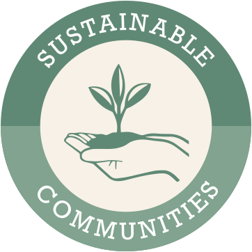
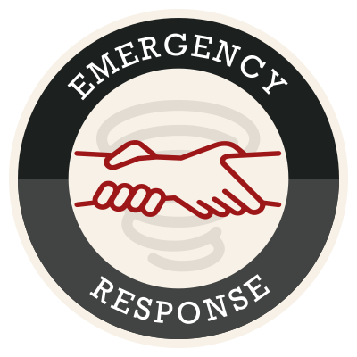
The appeals
Each appeal has a real story, a goal, a donation code, a prayer and downloadable resources for parishes. They’re the best-made pages on the site, and their donation form works.
Prayer of the day
A partner and a diocese to pray for each day is a real strength, and it deserves more room than a homepage tile.
The news and photography
The stories are current, and the photographs are captioned and credited, often “used with permission”. That’s good practice, and it makes the photographs safe to reuse across the site.
5
What I found
Apart from the forms, I’ve grouped these by the part of someone’s visit they affect and marked how soon I’d deal with each one. “Fix first” means it’s costing you supporters or gifts now, “fix soon” means it’s holding the site back, and “tidy up” covers smaller things that add up.
Fix firstFix soonTidy up
Giving
Fix first
Donors have to choose a fund before they can give
The main Donate page asks people to choose between the ABM General Fund, which isn’t tax-deductible, and the AID General Fund, which is, before they see a form. It’s an important difference, but most donors won’t know which to pick, and a choice before the form is a place where some people stop.
Fix: one donate page where the fund is already filled in (the AID General Fund, or the appeal someone came from) and can be changed, with the tax status shown as they choose. The concept has a working version.
Phones
Fix first
Donate isn’t in the phone header
On a phone the header has Contact, the phone number, the logos, search and the menu button. Donate is the last item in the menu.
Fix: keep Donate in the header at every screen size, as the concept does (compare the phones at the top of this review).
Fix first
Zoom is switched off
The site tells phones not to let people pinch to zoom (maximum-scale=1.0, user-scalable=0). For anyone whose eyesight isn’t perfect that’s a real barrier, and it fails the accessibility guidelines.
Fix: a one-line change.
Fix soon
The phone menu can’t be opened from a keyboard
The menu button is built from a plain box and an icon instead of a button, so someone using a keyboard or a switch device can’t open it.
Fix: a real button that opens and closes the menu, as in the concept.
Speed
Fix soon
The homepage is 6.9 MB on a phone
Most of it is the slider, whose 11 images (3.4 MB together) all download as soon as the page opens, though most people only see the first slide. In Google’s slow-4G test the main image takes 39.6 seconds to appear.
Fix: lead with the current appeal and size images for the screen they’re shown on.
Tidy up
Files aren’t cached
Lighthouse found 68 files sent without caching instructions, so returning visitors download them all again.
Fix: a few lines of server settings.
Accessibility
Fix soon
Contrast on buttons and panels
The header Donate button is white on light teal at a contrast of 2.99 to 1, under the 4.5 to 1 minimum. The 175th anniversary “Learn More” button is 2.24 to 1, and the Five Marks of Mission panel is 1.86 to 1.
Fix: the concept keeps the teal from the AID badge for Donate, which passes at 4.7 to 1, and every other colour passes too.
Fix soon
Links and buttons without names
The logo, the slider arrows and the three What We Do icons are links with no text a screen reader can read out, and the search button has no name either. The slider’s dots are 7 pixels across, too small to tap.
Fix: a label on every link and button, and larger tap targets.
Keeping it current
Fix soon
The homepage heading is out of date
The only main heading on the homepage is “Celebrating 175 Years”, which still describes 29 October 2025 as an anniversary to look forward to. Further along the slider, Lent 2026 pre-orders and the 2025 edition of Love, Hope and Justice in Action are still being promoted. The news itself is current.
Fix: lead with the current appeal and the latest news, as the concept does.
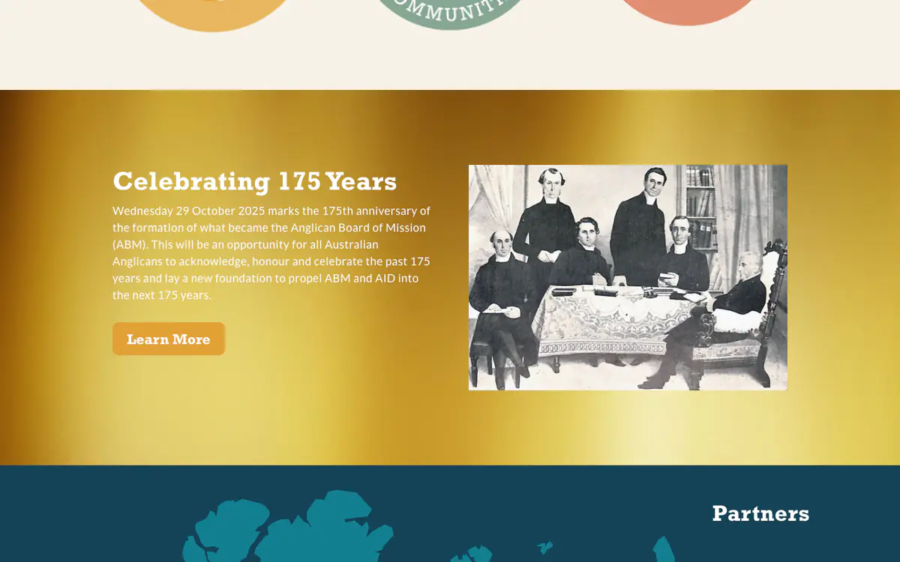
The homepage’s main heading on 20 October 2026.Tidy up
WordPress needs updating
The site runs WordPress 6.8.11, and the current release is 7.1.3.
Fix: update WordPress, the theme and the plugins, with a full backup first.
Tidy up
The news feed is empty
The site’s RSS feed (abmission.org/feed/) has no items, so anything that picks up your news automatically gets nothing.
Fix: include news stories in the feed.
6
Who the site is for
Before any design, it helps to be clear about who comes to the site and what they’re trying to do. This is my starting list. You’ll know better than I do, and I’d want to check it with you.
Who the site is for
Who
What they come to do
What the site should make easy
Supporters and donors
Give to an appeal or a fund, and know whether it’s tax-deductible
One donate page that works on a phone, with the tax status clear
Parishes and clergy
Find appeal packs, studies, seasonal resources and prayers
Each appeal’s resources on its page, and a library that’s easy to search
People who pray for the work
Find today’s partner and diocese to pray for
Prayer of the day, easy to find and to share
People thinking about a gift in their Will
Understand the options and talk to someone
A clear page and a named contact
Pilgrims
Find out about the next pilgrimage
Stories from past pilgrimages and a way to register interest
Partners and the wider Communion
See their work told well
Current stories, organised by country and program
7
A clearer structure
The menu today
Home
What We Do
Where We Work
Appeals
Get Involved
About
Resources
News
Donate
Donate sits in the header on laptops. On a phone it’s the last item in the menu.
The menu I’d suggest
What we do
Where we work
Appeals
News
Prayer
Get involved
Donate
Donate stays visible on every screen size.
About and its 16 pages become part of What we do, which explains ABM and AID together, with governance, reports and policies gathered on one page.
Resources moves under Prayer and Get involved, with Prayer of the day and the missional prayers at the front.
Program and partner pages stay under What we do and Where we work, each with a Donate button that works.
The 175th anniversary pages become part of ABM’s history, with redirects so old links keep working.
8
The concept
I’ve built a working concept from your own words and photographs: a homepage, a donate page and the Season of Creation appeal. It’s a starting point for a conversation and not a finished design.
The colours are your red and the teal from the AID badge, and the round badges do the explaining. The headings use Zilla Slab, a free slab serif in the same spirit as Rockwell, and Lato stays for the text.
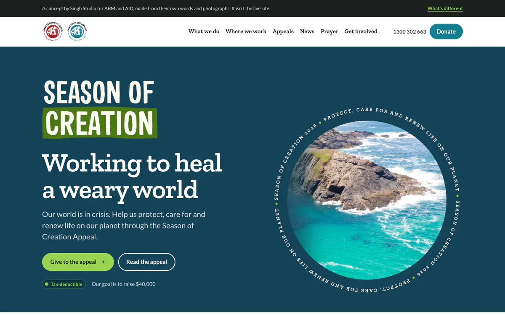
First screen. The current appeal in a round photograph like your badges, with Donate in the header.
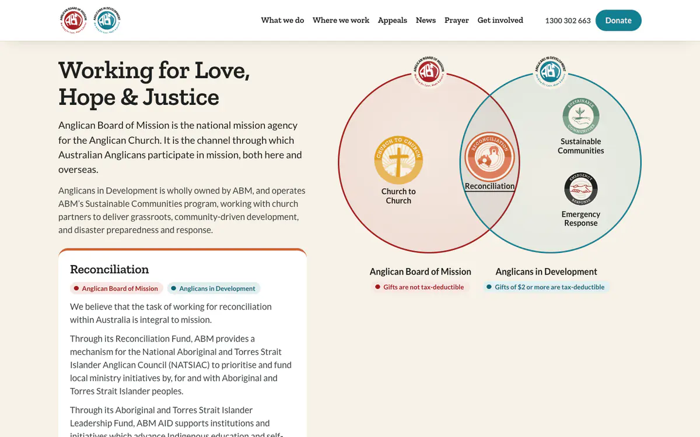
What we do. ABM’s circle and AID’s circle come together as you scroll, with each program’s badge where it belongs. Choose a badge to read about it.
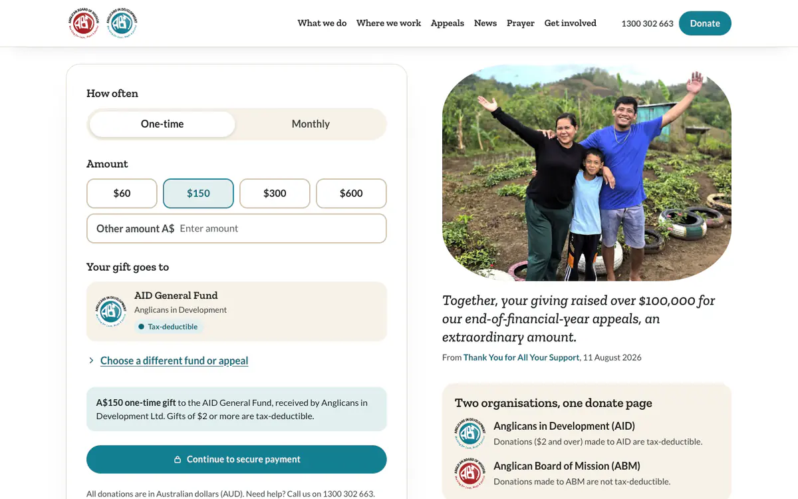
One donate page. The fund is filled in and can be changed, and the tax status, bank details and cheque payee follow it. Open the donate page
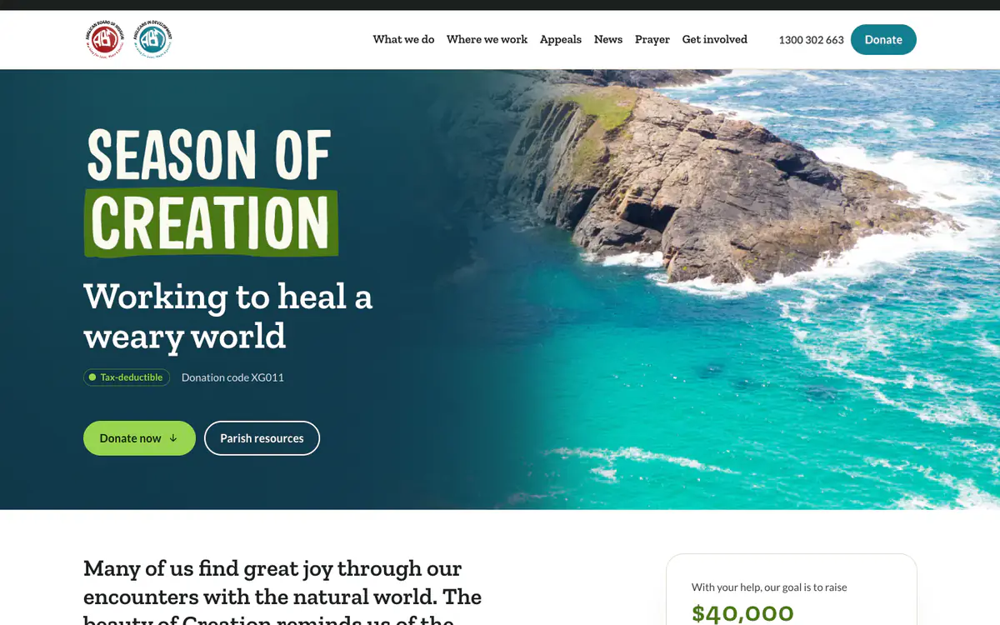
An appeal page. Season of Creation 2026, with everything from the current page and the give panel beside the story. Open the appeal
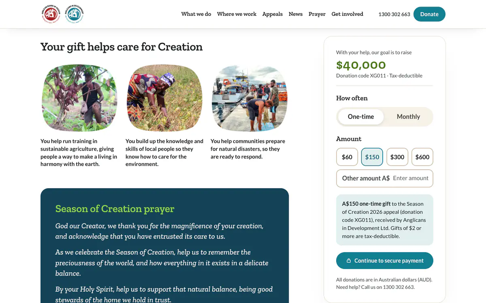
Real text. The impact statements and the prayer card are text, not pictures of text, so they can be read aloud, searched and updated.
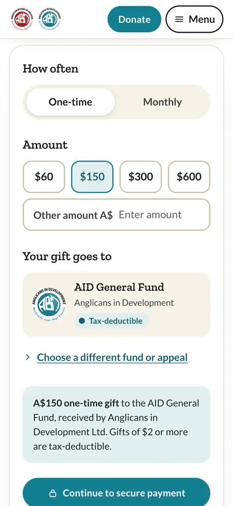
On a phone the form is the first thing on the donate page, and Donate and Menu stay at the top as you scroll. Try the concept on your phone as well as a laptop.
9
The plan
I’d do this in four steps, so the giving problem is fixed first and you see a difference quickly. My recommendation is to keep WordPress and Blackbaud. Your team already uses them and the content is already there. What I’d replace is the Divi page builder, which is where most of the weight comes from and what makes pages fiddly to keep consistent.
1. Fix the donate forms
Now
Adaptive forms for the general funds, and for the programs and partners you want to keep taking gifts for
Every Donate button pointing at a working form, with the old embed code removed
A check of every page with a form once it’s done
Aim: no blank forms anywhere.
2. Tidy up the current site
Next, at a fixed price
WordPress, the theme and the plugins brought up to date
Donate in the phone header, zoom back on and a menu that works from a keyboard
Contrast and labels fixed on buttons and links
A homepage that leads with the current appeal and the latest news, with images sized for the screen
Caching switched on and the news feed fixed
Aim: the homepage under 4 MB, accessibility above 90, and nothing out of date on the first screen.
3. Rebuild the templates
When you’re ready
A short discovery with your team to check the audiences and what they come to do
A lightweight WordPress theme in place of Divi, built around the badges, with templates for the homepage, appeals, programs, partners, news, prayer, resources and giving
One donate page with the fund filled in, using Blackbaud’s adaptive forms
An appeal template with the goal, donation code, prayer and parish resources in their own fields, so a new appeal takes minutes to set up
Accessibility and speed checks before launch, and training for whoever edits the site
Aim: pages under 1 MB, accessibility scores of 100, and the same content and Blackbaud setup you have now.
4. Keep it current
Ongoing, if it helps
The homepage updated with each new appeal and the latest news
New appeal pages set up from your copy and photographs
A monthly check that every donation form loads and every link works
Aim: a site that stays current without it falling to whoever has a spare hour.
I haven’t put prices in this review. I’m happy to cost the forms and the tidy-up on their own, or the whole thing a step at a time.
10
Next steps
Check the donate forms this week. If they’re still blank, getting the Donate buttons onto adaptive forms before the Christmas appeals matters more than anything else here.